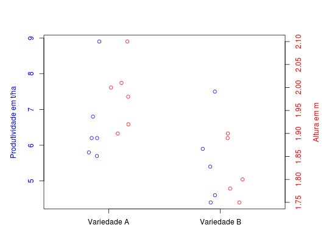

Com o interesse de testar a hipótese de igualdade entre duas variedades de milho, foram mensuradas as variáveis aleatórias produtividade e altura das plantas em cada uma das variedades.
Um data.frame com 11 observações e 3 variáveis.
varieprodalturaFERREIRA (2011), Exemplo 7.4 pág. 302.
data(FerreiraEg7.4)#> Warning: data set ‘FerreiraEg7.4’ not foundstr(FerreiraEg7.4)#> 'data.frame': 11 obs. of 3 variables: #> $ varie : Factor w/ 2 levels "A","B": 1 1 1 1 1 1 2 2 2 2 ... #> $ prod : num 5.7 8.9 6.2 5.8 6.8 6.2 4.4 7.5 5.4 4.6 ... #> $ altura: num 2.1 1.9 1.98 1.92 2 2.01 1.8 1.75 1.78 1.89 ...aggregate(prod ~ varie, data = FerreiraEg7.4, summary)#> varie prod.Min. prod.1st Qu. prod.Median prod.Mean prod.3rd Qu. prod.Max. #> 1 A 5.70 5.90 6.20 6.60 6.65 8.90 #> 2 B 4.40 4.60 5.40 5.56 5.90 7.50aggregate(altura ~ varie, data = FerreiraEg7.4, summary)#> varie altura.Min. altura.1st Qu. altura.Median altura.Mean altura.3rd Qu. #> 1 A 1.900 1.935 1.990 1.985 2.007 #> 2 B 1.750 1.780 1.800 1.824 1.890 #> altura.Max. #> 1 2.100 #> 2 1.900by(FerreiraEg7.4[2:3], FerreiraEg7.4[1], cov)#> varie: A #> prod altura #> prod 1.4200 -0.05040 #> altura -0.0504 0.00511 #> ------------------------------------------------------------ #> varie: B #> prod altura #> prod 1.54300 -0.03655 #> altura -0.03655 0.00453layout(1) with(FerreiraEg7.4, { par(mar = c(4, 5, 4, 5)) plot.default(y = prod, xlab = "", ylab = "", x = jitter(as.numeric(varie), factor = 0.5) - 0.1, xlim = c(0.5, 2.5), col = 4, axes = FALSE) box() axis(side = 2, col.axis = 4) mtext(side = 2, text = "Produtividade em t/ha", line = 3, col = 4) par(new = TRUE, mar = c(4, 5, 4, 5)) plot.default(y = altura, xlab = "", ylab = "", x = jitter(as.numeric(varie), factor = 0.5) + 0.1, xlim = c(0.5, 2.5), col = 2, axes = FALSE) axis(side = 4, col.axis = 2) axis(side = 1, at = 1:2, labels = c("Variedade A", "Variedade B")) mtext(side = 4, text = "Altura em m", line = 3, col = 2) })